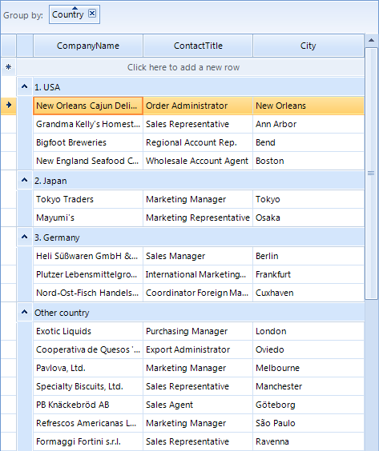

Custom Grouping
Custom grouping is a flexible mechanism for creating RadGridView groups by using custom logic. It has a higher priority than the applied
GroupDescriptors (added either by code or by dragging columns to the group panel).
Custom grouping is applied if user grouping is enabled through the RadGridView.EnableGrouping or
GridViewTemplate.EnableGrouping properties. By default, grouping is enabled at all levels.
RadGridView provides two mechanisms for custom grouping:
Handling the CustomGrouping event
Replacing the RadGridView grouping mechanism by providing a custom GroupPredicate
You can use the GroupSummaryEvaluate event to format the group header row text of the created custom groups.
Using the CustomGrouping event
The CustomGrouping event is fired if custom grouping is enabled through the
RadGridView.EnableCustomGrouping or GridViewTemplate.EnableCustomGrouping properties.
By default, custom grouping is disabled at all levels.
Template – the template that holds the rows that will be grouped
Row – the row which group is defined
Level – the level of the current group, represents zero-based depth of the group
GroupKey – identifier of the group
Handled – defines whether the row is processed by the custom algorithm or by the applied group descriptors.
The following example demonstrates how to handle the CustomGrouping event to group the RadGridView rows
by the values of the Country column creating groups only for predefined countries:
[C#]
this.radGridView1.EnableCustomGrouping = true;
this.radGridView1.CustomGrouping += new GridViewCustomGroupingEventHandler(radGridView1_CustomGrouping);
GroupDescriptor descriptor = new GroupDescriptor("Country");
this.radGridView1.GroupDescriptors.Add(descriptor);
this.radGridView1.GroupSummaryEvaluate += new GroupSummaryEvaluateEventHandler(radGridView1_GroupSummaryEvaluate);
[C#]
private void radGridView1_CustomGrouping(object sender, GridViewCustomGroupingEventArgs e)
{
string country = e.Row.Cells["Country"].Value.ToString();
switch (country)
{
case "USA":
e.GroupKey = "1. USA";
break;
case "Japan":
e.GroupKey = "2. Japan";
break;
case "Germany":
e.GroupKey = "3. Germany";
break;
default:
e.GroupKey = "Other country";
break;
}
}
private void radGridView1_GroupSummaryEvaluate(object sender, GroupSummaryEvaluationEventArgs e)
{
if (e.Value == null)
{
e.FormatString = e.Group.Key.ToString();
}
}
[VB.NET]
Me.RadGridView1.EnableCustomGrouping = True
Dim descriptor As New GroupDescriptor("Country")
Me.RadGridView1.GroupDescriptors.Add(descriptor)
[VB.NET]
Private Sub RadGridView1_CustomGrouping(ByVal sender As Object, ByVal e As Telerik.WinControls.UI.GridViewCustomGroupingEventArgs) Handles RadGridView1.CustomGrouping
Dim country As String = e.Row.Cells("Country").Value.ToString()
Select Case country
Case "USA"
e.GroupKey = "1. USA"
Exit Select
Case "Japan"
e.GroupKey = "2. Japan"
Exit Select
Case "Germany"
e.GroupKey = "3. Germany"
Exit Select
Case Else
e.GroupKey = "Other country"
Exit Select
End Select
End Sub
Private Sub RadGridView1_GroupSummaryEvaluate(ByVal sender As Object, ByVal e As Telerik.WinControls.UI.GroupSummaryEvaluationEventArgs) Handles RadGridView1.GroupSummaryEvaluate
If e.Value Is Nothing Then
e.FormatString = e.Group.Key.ToString()
End If
End Sub

Implementing grouping mechanism by using GroupPredicate
You can replace the grouping mechanism in RadGridView with a custom one by setting the GroupPredicate of the
GridViewTemplate.
The following example demonstrates how to use a custom grouping mechanism in RadGridView to group the rows by the values of the
ContactTitle column, creating groups only for the desired contact title categories:
[C#]
GroupDescriptor descriptor = new GroupDescriptor("ContactTitle");
this.radGridView1.GroupDescriptors.Add(descriptor);
this.radGridView1.MasterTemplate.GroupPredicate = new GroupPredicate<GridViewRowInfo>(PerformGrouping);
this.radGridView1.GroupSummaryEvaluate += new GroupSummaryEvaluateEventHandler(radGridView1_GroupSummaryEvaluate);
[C#]
private object PerformGrouping(GridViewRowInfo row, int level)
{
string title = row.Cells["ContactTitle"].Value.ToString();
string groupKey;
if (title.StartsWith("Sales"))
{
groupKey = "1. Sales contacts";
}
else if (title.StartsWith("Marketing"))
{
groupKey = "2. Marketing contacts";
}
else if (title.StartsWith("Accounting"))
{
groupKey = "3. Accounting contacts";
}
else
{
groupKey = "Other contacts";
}
return groupKey;
}
private void radGridView1_GroupSummaryEvaluate(object sender, GroupSummaryEvaluationEventArgs e)
{
if (e.Value == null)
{
e.FormatString = e.Group.Key.ToString();
}
}
[VB.NET]
Dim descriptor As New GroupDescriptor("ContactTitle")
Me.RadGridView1.GroupDescriptors.Add(descriptor)
Me.RadGridView1.MasterTemplate.GroupPredicate = New GroupPredicate(Of GridViewRowInfo)(AddressOf PerformGrouping)
[VB.NET]
Private Function PerformGrouping(ByVal row As GridViewRowInfo, ByVal level As Integer) As Object
Dim title As String = row.Cells("ContactTitle").Value.ToString()
Dim groupKey As String
If title.StartsWith("Sales") Then
groupKey = "1. Sales contacts"
ElseIf title.StartsWith("Marketing") Then
groupKey = "2. Marketing contacts"
ElseIf title.StartsWith("Accounting") Then
groupKey = "3. Accounting contacts"
Else
groupKey = "Other contacts"
End If
Return groupKey
End Function
Private Sub RadGridView1_GroupSummaryEvaluate(ByVal sender As Object, ByVal e As Telerik.WinControls.UI.GroupSummaryEvaluationEventArgs) Handles RadGridView1.GroupSummaryEvaluate
If e.Value Is Nothing Then
e.FormatString = e.Group.Key.ToString()
End If
End Sub